Portfolio
Lucas Damstén
Je suis spécialiste de la CAO et de la maintenance.
Je suis aussi un concepteur et un artisan.
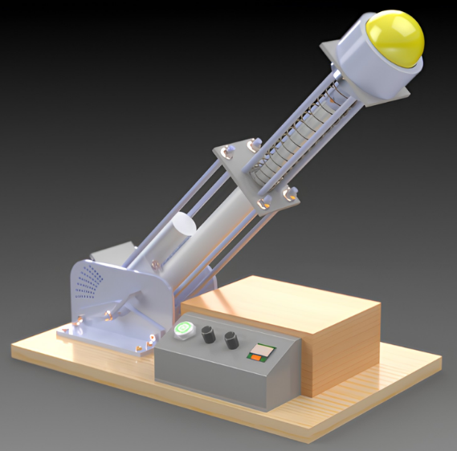
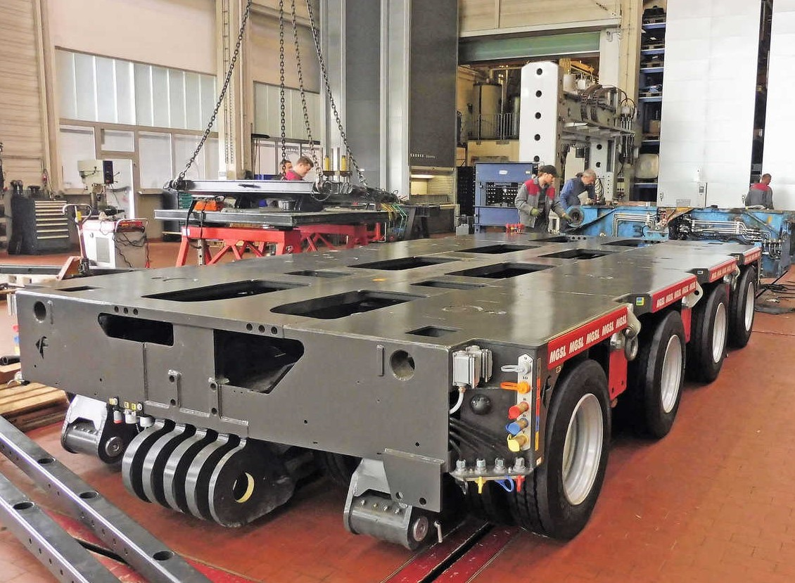
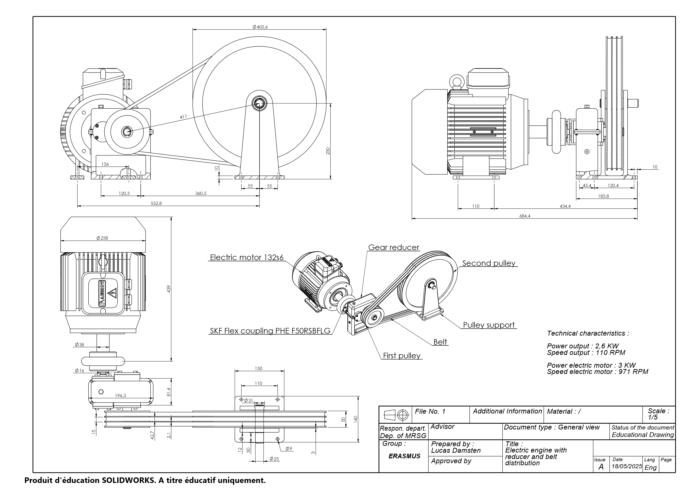
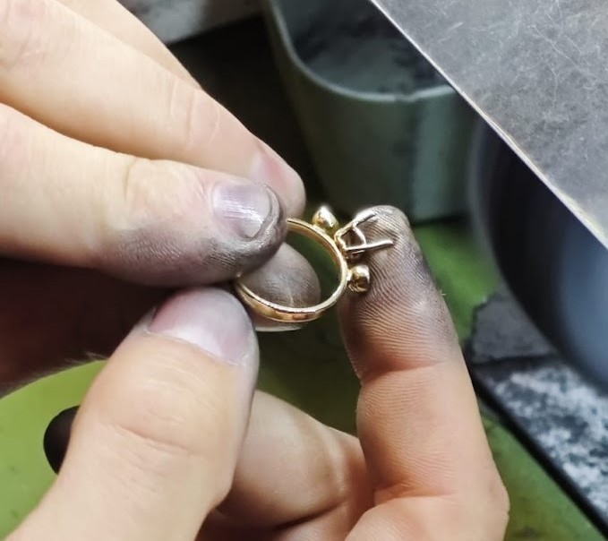
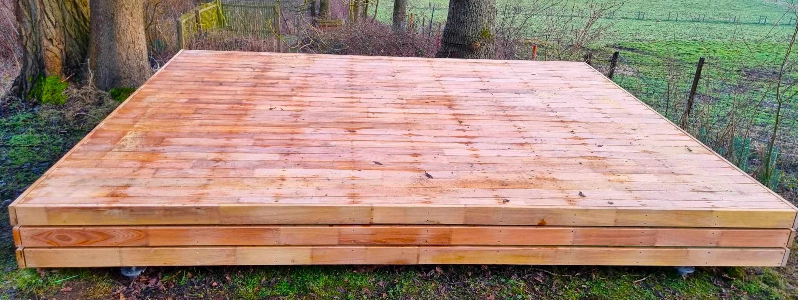
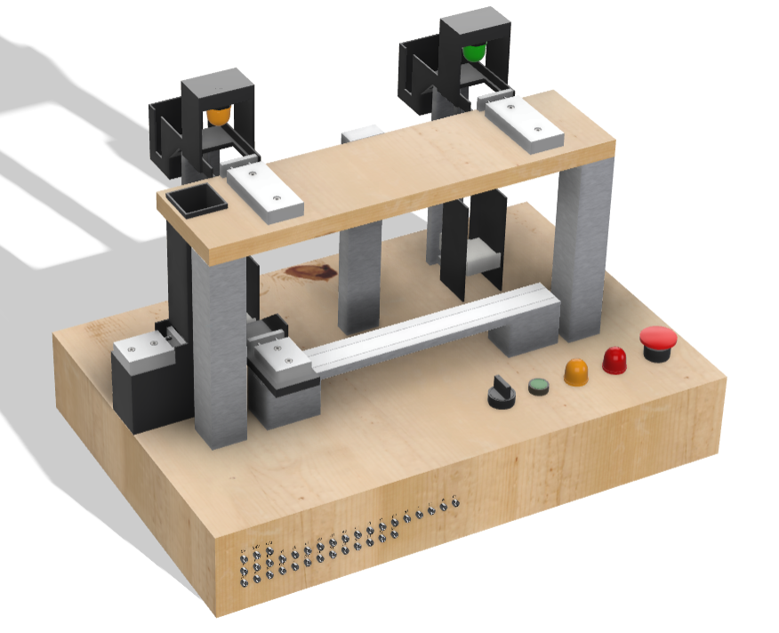
Projets académiques
Canon à tir parabolique
Pour vérifier les équations de la statique, j'ai fabriqué un canon à angle réglable avec un système de réglage de la compression variable électroniquement. J'ai fabriqué le canon sur la base d’un cahier des charges comprenant plusieurs critères, notamment les dimensions, le coût et les exigences de fonctionnement. Pour sa fabrication, nous avons utilisé différentes machines-outils, telles qu’un tour conventionnel, une fraiseuse à commande numérique, une perceuse à colonne, ainsi que d’autres équipements d’usinage. La modélisation complète du canon a été réalisée à l’aide de SolidWorks. À l’issue du projet, notre équipe a obtenu les meilleurs résultats parmi les cinq équipes participantes car nous avons répondu à l’ensemble des exigences définies dans le cahier des charges.
Démonstration
J'ai dû régler l'angle et la longueur de compression du ressort via l'interface électronique pour tirer la balle dans le réceptacle. L'angle d'inclinaison était imposé avant le tir.
Réducteur de vitesse
J'ai calculé et dessiné ce système de réduction de vitesse qui est composé d'un moteur électrique suivi d'un réducteur et d'un système de poulies entraînées par courroies. Ce projet, établi par un cahier des charges, avait pour but de dimensionner l’engrenage, les arbres, les poulies et les courroies tout en tenant compte des propriétés mécaniques de chaque matériau.
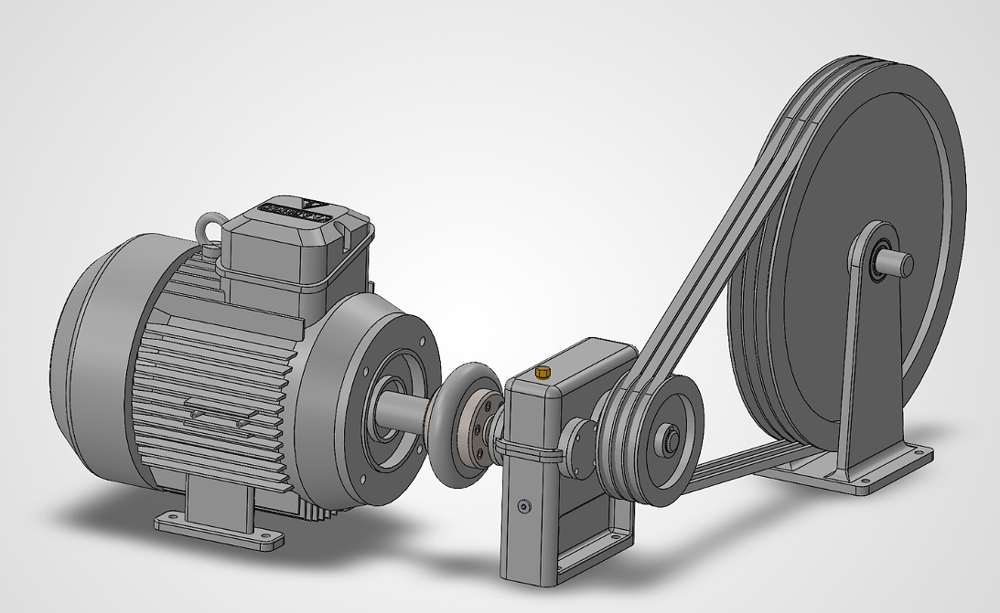
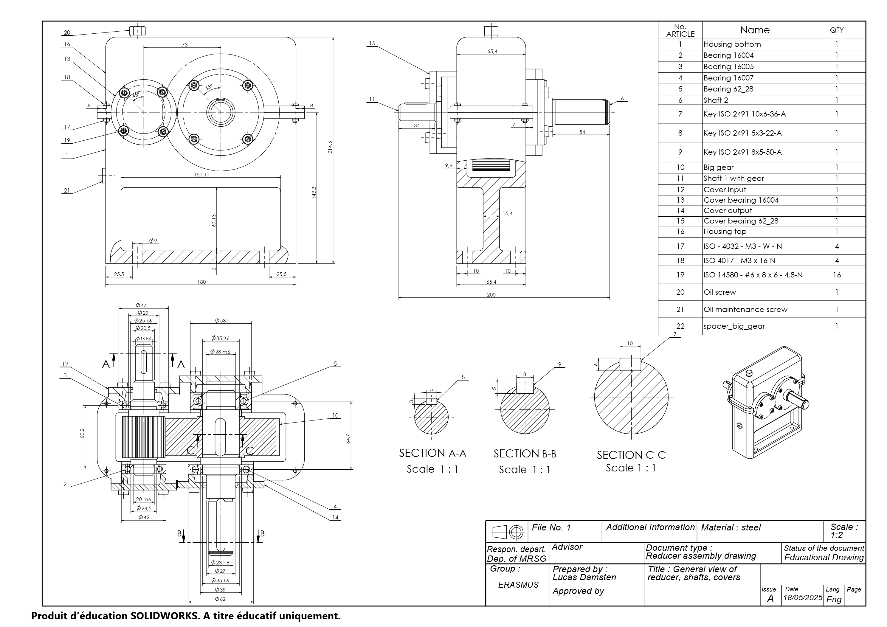
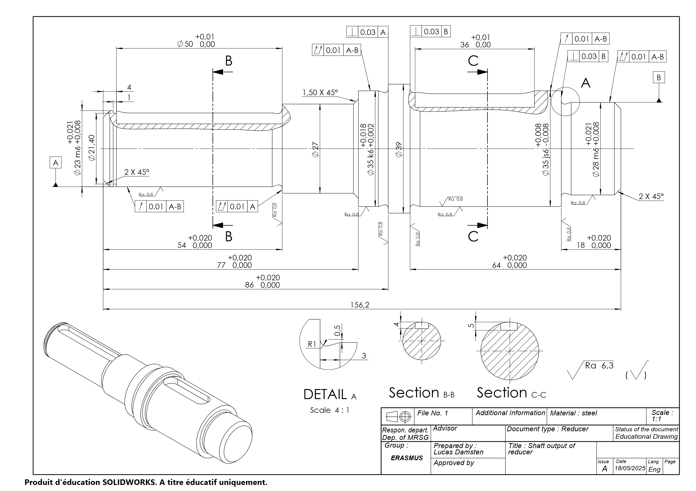
Conception d’une installation HVAC
J'ai du concevoir une installation HVAC pour un supermarché. L’installation, son emplacement, ses capacités, son rendement et les circuits qui la composent ont dû être établis afin de garantir son bon fonctionnement. J'ai conçu le système pour deux fonctionnements, été et hiver. Cette installation est composée de panneaux solaires, d’une pompe à chaleur, d’un groupe de récupération de chaleur et d’autres éléments essentiels au fonctionnement de l’installation.
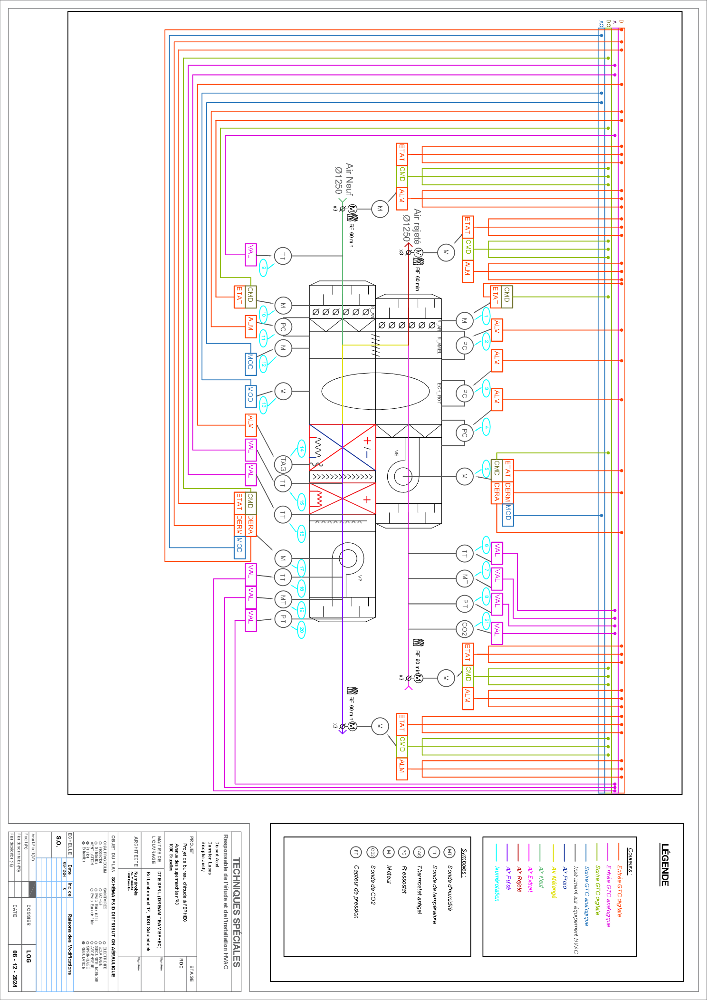
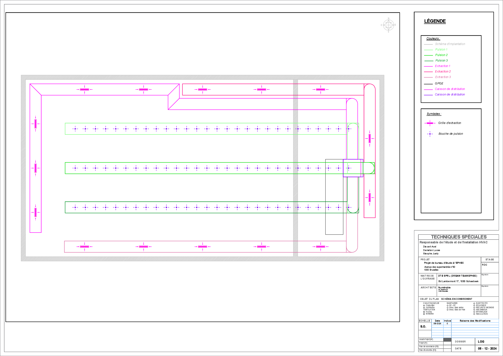
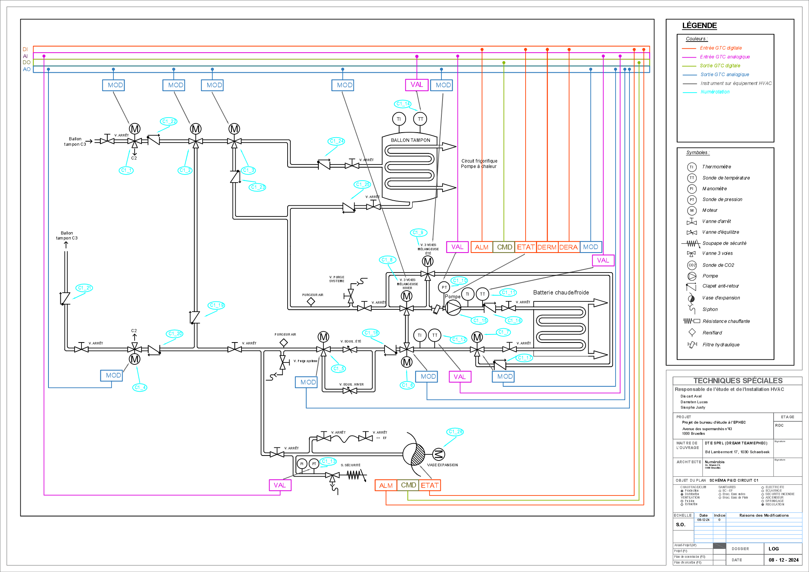
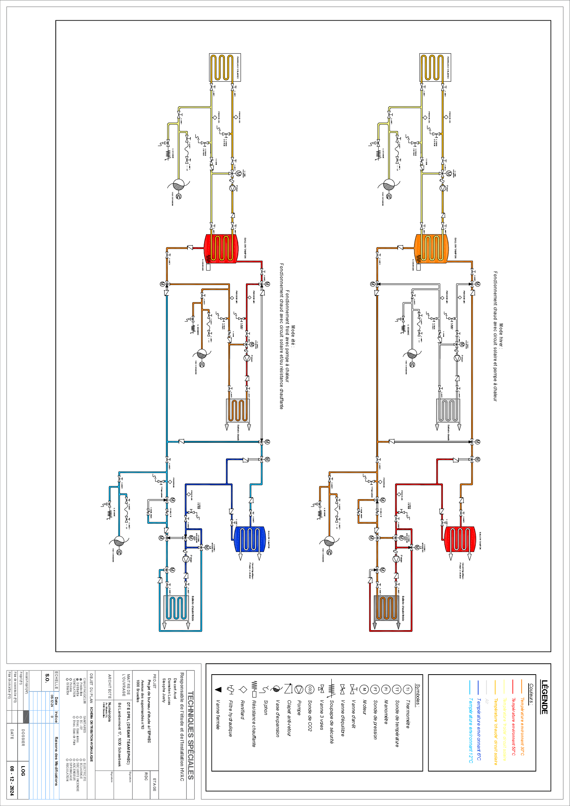
Conception d’un système de tri et traitement
Ce projet d’automatisation de processus a pour but de trier 2 types de matériaux afin de leur faire subir un traitement thermique. Les matériaux sont déplacés à l'aide de vérin depuis une cheminée d’acheminement jusqu’à un emplacement de stockage. Différents capteurs de proximité et de détection de couleur sont utilisés pour détecter et déplacer les matériaux selon leur couleur. Un bornier a été utilisé pour rendre ce système didactique.
Mon parcours
Du terrain à la conception technique
Je suis titulaire d’un bachelier en électromécanique que j'ai obtenu après une reconversion de la menuiserie vers la mécanique. C’est en travaillant que j’ai ressenti le besoin de mieux comprendre les systèmes et les technologies qui m’entouraient. J’ai donc choisi de reprendre des études pour approfondir mes connaissances techniques. Aujourd’hui, cette formation me permet de comprendre, concevoir et résoudre des problèmes avec une vision plus globale.
Bachelier en électromécanique
Lors de mon bachelier, mon expérience de terrain m’a permis de faire le lien entre la théorie et la pratique. J’ai particulièrement apprécié reprendre les études, car je comprenais enfin pourquoi les systèmes étaient conçus d’une certaine manière plutôt qu’une autre. Cette formation m’a également permis de développer un regard plus critique sur les informations et les solutions qui se présentaient à moi. J’ai pu combiner ma rigueur avec mon expérience pratique afin de donner le meilleur de mes capacités. Malgré des bases théoriques moins solides au départ, liées à mon parcours professionnel, ma motivation m’a permis de progresser rapidement et de terminer mon bachelier avec une grande distinction.
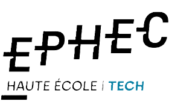
Erasmus à VILNIUS TECH
Mon Erasmus m’a permis de consolider mes connaissances techniques et pratiques, notamment à travers l’utilisation de SolidWorks et des cours d’analyse de systèmes automobiles. J’ai notamment étudié le fonctionnement de boîtes de vitesses, de systèmes de suspension et de réducteurs en reliant la théorie à des applications de démontage. Les cours étant dispensés en anglais, cette expérience m’a également permis de renforcer mes compétences techniques et ma maîtrise de la langue.
Mécanicien
J’ai travaillé au sein du service de réparation de Faymonville Trailer. Étant menuisier de formation, je suis arrivé dans ce domaine avec très peu de connaissances en mécanique. Au cours de deux années, j’ai acquis les compétences nécessaires pour travailler en autonomie et intervenir sur différents types de remorques : transport de verre, transport de bois et remorques extensibles. Chaque type de remorque m’a permis de découvrir des systèmes électriques, pneumatiques et hydrauliques différents, ainsi que leurs problèmes et méthodes de réparation. J’ai également eu l’occasion d’intervenir directement sur le terrain lors de dépannages. Cette expérience m’a surtout appris à apprendre par moi-même, à m’adapter à de nouvelles situations et à chercher des solutions. C’est cette curiosité et cette motivation à comprendre de nouvelles choses qui m’ont permis de passer de débutant à mécanicien autonome.
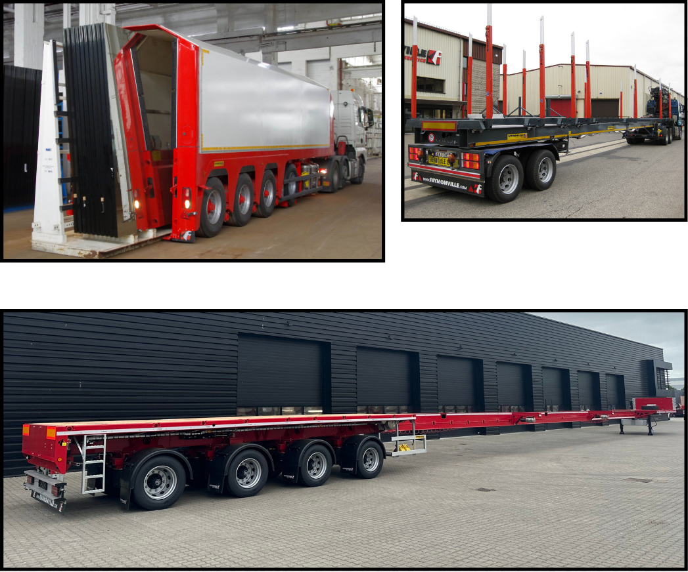
Menuisier
La menuiserie est un métier qui m’a toujours attiré car elle permet de transformer une idée en un projet concret. C’est cette dimension créative qui m’a donné envie de continuer à pratiquer la menuiserie aujourd’hui comme hobby. Ce métier m’a apporté des compétences qui me servent encore dans mon parcours comme la lecture de plans, la précision, la rigueur, l'autonomie et la capacité à travailler de mes propres mains. Même si j’ai depuis évolué vers la mécanique et l’ingénierie, la menuiserie reste pour moi une manière de créer, de concevoir et de réaliser des projets concrets.
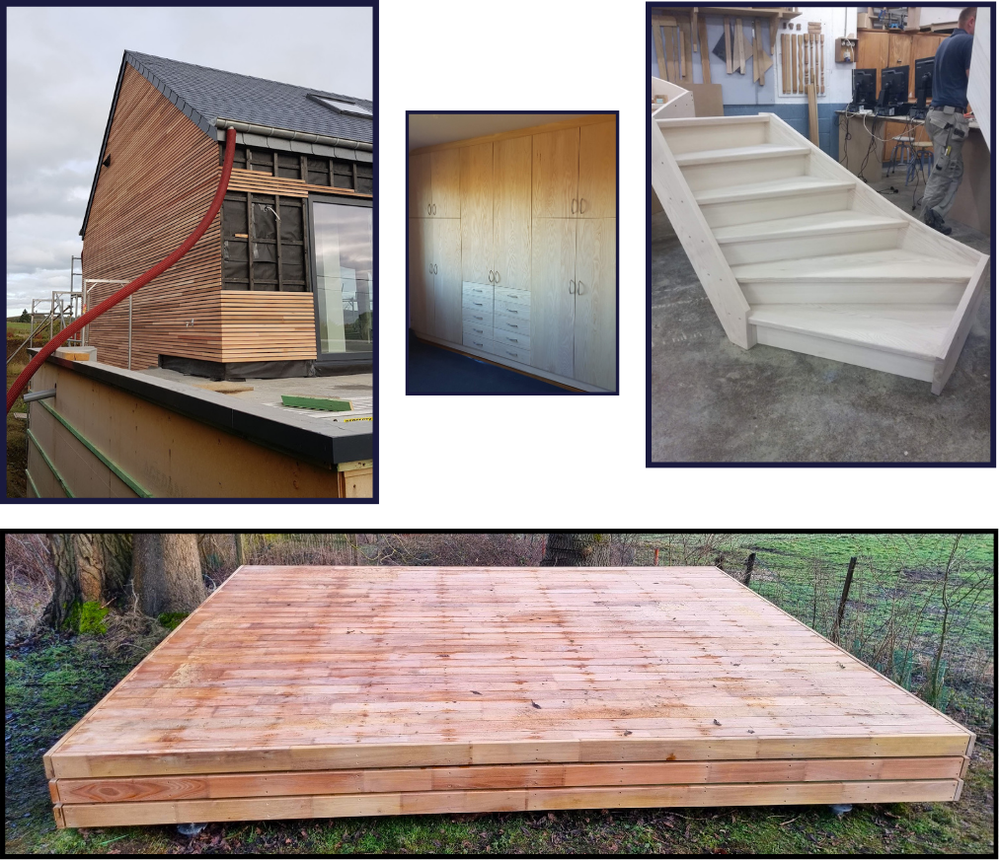
Projets personnels
Concevoir, fabriquer, réparer : passer de l'idée au concret.
Bague de fiançailles et pendentif
En quelques semaines, j'ai pris le temps de découvrir le métier de joaillier. Je me suis retrouvé face à un défi de taille où j'ai du apprendre et m'adapter afin de réaliser un bijou d'une très grande valeur sentimentale. Ce défi m'a apporté beaucoup. J'ai découvert une passion où je peux allier mes connaissances théoriques à la pratique. De plus, pour visualiser au mieux les projets, je me permets de les modéliser en 3D.
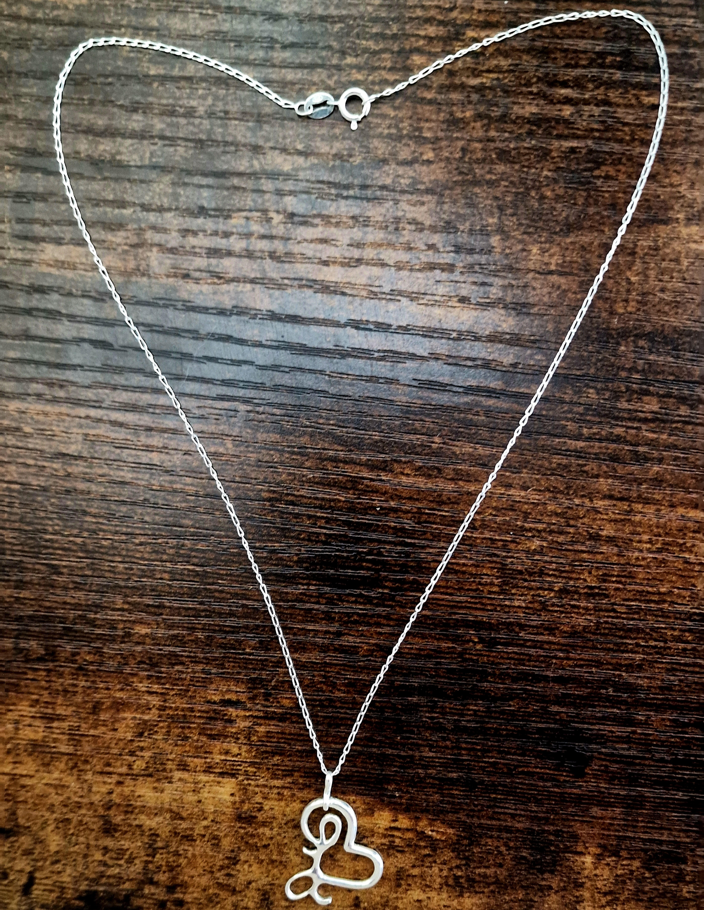
Projets de mécanique
J'ai effectué de la maintenance corrective et systématique sur des véhicules automobiles et engins d'espaces verts. J'ai remplacé différentes pièces comme un turbocompresseur, un cardan, des freins. J'ai également effectué la maintenance systématique de tondeuses, débrousailleuses et outils type "combiné".
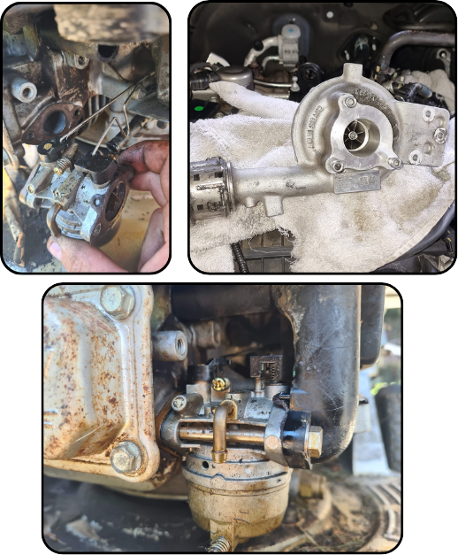
Projets de menuiserie
J'ai réalisé des armoires sur mesure, des meubles simples ou personnalisés avec de la résine époxy, des travaux de rénovation d'une cuisine avec une remise en état de l'électricité et encore des terrasses sur pilotis sur des terrains en pente.
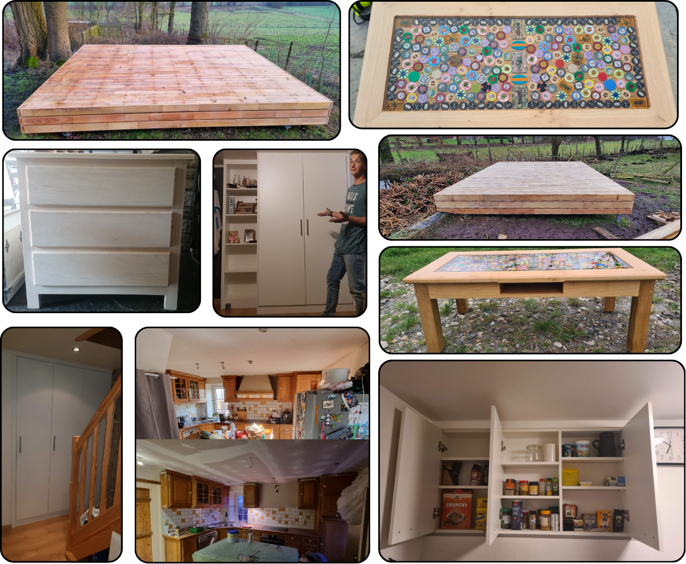